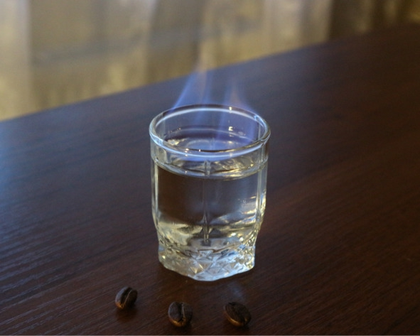

О культуре пития .. Как пить самбуку.


1. По-итальянски («с мухами»). Классический вариант подачи. «Мухами» называют три кофейных зернышка, которые символизируют здоровье, богатство и счастье. Понадобятся самбука, два бокала (желательно коньячных), кофейные зерна, трубочки, бумажные салфетки и спички (зажигалка).
Инструкция: в первый бокал бросить три кофейных зернышка и налить 50—70 мл самбуки. Далее в центре бумажной салфетки сделать отверстие, вставив в него коктейльную трубочку коротким концом. Чтобы не запачкать стол, желательно поставить эту конструкцию на небольшое блюдце. Поджечь самбуку спичкой или зажигалкой. Благодаря высокой крепости ликер легко воспламеняется. Самбука должна гореть синим пламенем 5—10 секунд. Затем перелить пылающий напиток во второй бокал, а первым накрыть сверху. Когда огонь погаснет, первый бокал, в котором собрались пары, аккуратно перенести на салфетку. Сначала залпом выпить самбуку, задержав кофейные зерна во рту, затем через трубочку сделать несколько глубоких вдохов и разжевать кофе.
2. В чистом виде. Прежде чем пить самбуку в чистом виде, напиток следует хорошо охладить, поставив бутылку на 15—20 минут морозильную камеру. Как и большинство сладких ликеров, итальянская анисовка хорошо сочетается с солоноватыми сырами, рыбной закуской, разнообразными маринадами: оливками, соленьями. Очень хорошо идут под самбуку орехи и сладкое: разнообразные десерты, мороженое, сочные фрукты.
3. Горящая стопка. Любимый способ многих русских, так как требует минимум телодвижений и чем-то напоминает культуру употребления водки. Достаточно налить самбуку в стопку, поджечь и дать напитку погореть 5—8 секунд. Далее погасить ликер одним сильным выдохом и выпить залпом, пока он горячий.

Если самбука будет гореть слишком долго, стопка сильно нагреется и её будет сложно взять в руку
4. С минералкой. В жару можно пить самбуку, разбавленную холодной минеральной водой в пропорции 1:2 или 1:3 (одна часть ликера к двум-трем частям минералки). Пряный травяной вкус «анисовки» не теряется, а только становится изысканнее и тоньше.
Чистая и разбавленная водой самбука
Сразу после добавления воды самбука мутнеет. Это нормально и не влияет на вкус. Все дело в большой концентрации эфирных масел аниса, плохо растворяющихся в воде.
5. С молоком. Некоторым ценителям нравится запивать самбуку свежим холодным молоком минимальной жирности. Молоко можно заменить густыми сливками (не смешивать, а запивать), также в сливки добавляют сахар по вкусу.
6. С чаем и кофе. Добавить ликер в чашку эспрессо (пропорции 1:4) либо влить самбуку в чашечку «эрл грея» или обычного черного байхового. Получится согревающий напиток, придающий сил и повышающий жизненный тонус.
7. Разбавляя соками. Подойдет любой цитрусовый (апельсиновый, грейпфрутовый или лимонный) или ягодный сок. Пропорции: три-четыре части сока к одной части ликера.